适用对象：俱乐部管理员 / 超管 / 想搞懂全部功能的成员 ｜ 截图中的 红框序号 与正文步骤编号一一对应
诡秘之主 · 俱乐部管理
功能说明与使用手册 ｜ 内部运营文档 ｜ 整理日期 2026-11-06 ｜ 基于线上正式版整理
〇 总览：这套系统能干什么
这是一套给「诡秘之主」MMO 单俱乐部用的运营工具，分两个端：
- PC 管理后台（浏览器打开）——管理员用：管成员、发活动、审入会、看出勤、发公告、管晒图。
- 微信小程序（搜「诡秘之主 · 俱乐部」）——全体成员用：看名单、报名活动、组队、晒图、收提醒。
| 能力 | 干什么用 | 谁操作 |
|---|---|---|
| 成员名册 | 集中维护角色名、非凡评分、风尚度、途径、职位；支持游戏截图 OCR 批量导入 | 管理员维护，全员可查 |
| 邀请码入会 | 把成员微信与名单中的角色安全关联，外人进不来 | 管理员发码、审核 |
| 活动日程 | 一次性 / 每日 / 每周活动；成员表态参加、待定、请假；可配微信提醒 | 管理员发布，成员表态 |
| 组队 LFG | 活动下开队伍招募，队长审批、满员、到点自动开始 | 成员建队 / 队长管理 |
| 出勤看板 | 今日 / 本周 RSVP 汇总、实到点名、成员出勤摘要 | 管理员 |
| 公告 / 资料踏云寻芳 | 公告轮播通知；俱乐部门面；成员晒风景自拍 | 管理员发布，成员晒图 |
角色与权限
| 角色 | 能做什么 |
|---|---|
| 超管 | 管理员全部能力 ＋ 任命 / 取消管理员 ＋ 应急账号。全俱乐部通常 1～2 人。 |
| 管理员 | 成员增删改、截图导入、邀请码审核、活动与公告、提醒配置、出勤点名、踏云寻芳管理。不能任命管理员。 |
| 成员 | 看名单与公告、活动报名、组队、晒图、收提醒、看自己的报名记录。 |
| 访客 | 刚进小程序还没关联角色的人：只能填邀请码申请入会，看不到名单和活动。 |
一 登录管理后台
这个页面用来干什么：管理员进入 PC 后台的唯一入口。正常走微信扫码确认；当二维码出不来时，用「票号」或应急账号。
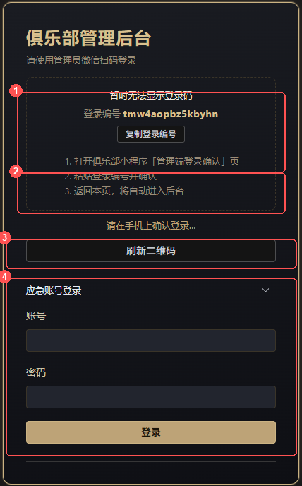
方式一：票号登录（推荐）
- 打开管理后台登录页，页面会显示一行「登录编号」（如 tmw4aopbz5kbyhn），点「复制登录编号」。
- 打开小程序，进入 「我的」→ 扫码（管理员身份才显示该入口），进入「管理端登录确认」页。
- 把登录编号粘贴进去，确认。
- 回到 PC 页面，稍等一两秒会自动进入后台。
方式二：应急账号登录
- 在登录页点开「应急账号登录」折叠区。
- 输入账号 admin、密码 admin（当前设置），点「登录」。
.env 中修改 EMERGENCY_* 配置后重启服务。
二 成员列表
这个页面用来干什么：俱乐部名册的总账本——谁在会里、评分多少、什么途径、什么职位，全在这维护。它也是截图 OCR 导入、任命管理员的操作台。
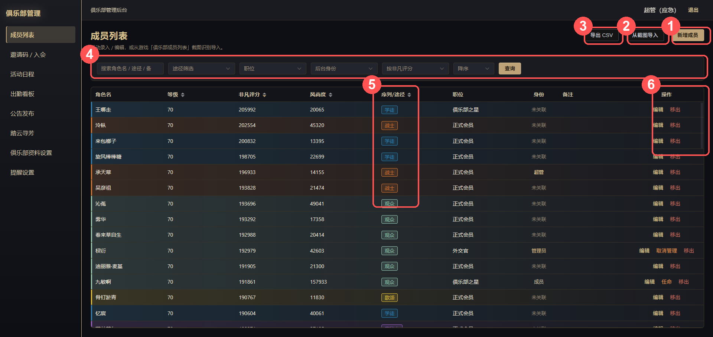
2.1 手动新增 / 编辑一名成员
- 点右上「新增成员」（改人则点该行「编辑」）。
- 填角色名（必填、全俱乐部唯一）、等级、非凡评分、风尚度、序列 / 途径（下拉六选一，可留空）、职位（会长 / 副会长 / 外交官 / 俱乐部之星 / 正式会员 / 骨干 / 成员 / 候补）、备注。
- 点「保存」。备注是全员可见的，写「常用小号」「主坦」这类信息很合适。
2.2 从截图导入（OCR，批量录入的主力）
游戏内「俱乐部成员列表」一屏截一张，长列表翻页多截几张，一次性丢给系统识别。
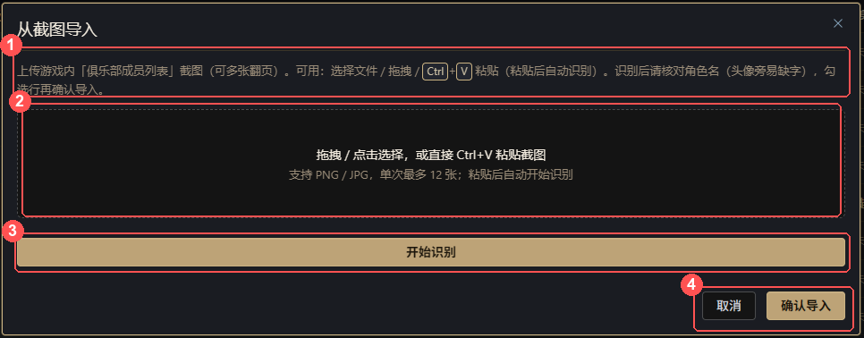
- 点「从截图导入」，把截图直接 Ctrl+V 粘贴进弹窗（也支持点选、拖拽），单次最多 12 张，粘贴后自动开始识别。
- 识别完成后出现预览表：每一行是一个识别出的成员，标了「新增」还是「更新」。逐行核对——角色名最容易被头像挡住缺字，直接在表格里改。
- 不要的行取消勾选，然后点「确认导入」。系统按角色名匹配：名单里没有 → 新增；已有 → 更新评分等字段。
2.3 筛选、排序、导出
- 筛选行（④）支持：关键字搜索（角色名 / 途径 / 备注）、途径多选、职位、后台身份（超管 / 管理员 / 已关联 / 未关联）。
- 排序：默认按非凡评分降序，可切换风尚度、等级、途径、角色名、入会时间。
- 「导出 CSV」：把当前名单全量导出，用 Excel 打开做备份或线下统计。
2.4 移出成员
- 点该行「移出」→ 确认。成员标记为「已退出」，同时解除其微信关联（该成员小程序自动降为访客，看不到名单和活动）。
- 反悔：按 2.1 重新录入同名角色，或 OCR 导入同名，即恢复在职。
- 目标成员必须已通过邀请码绑定微信（身份列不是「未关联」）。
- 点该行「任命」→ 确认。此后他能用微信扫码 / 票号登录管理后台。
- 「取消管理」降回成员：后台进不来了，小程序成员能力不受影响。
- 「生成表单」里可选填自定义码（留空自动生成）、次数上限、过期时间，点「生成邀请码」。
- 把码发给真实成员（游戏私聊、群都行）。点列表里的码文字即可复制；用完或过期可点「停用」。
- 成员提交申请后，下方「关联申请」表出现记录（角色名、途径、留言）。核对角色名确实是本人 → 点「通过」；可疑的点「拒绝」。
- 通过后：该微信立即能看名单、报活动。筛选按钮（③）可在「待审 / 全部」间切换。
- 成员进小程序，首页点「邀请码关联角色」。
- 输入管理员发的邀请码＋与名单完全一致的角色名（标点、空格也要一致），可留一句留言（如游戏区服）方便核对。
- 提交后显示「关联申请审核中」，等管理员通过即可。角色名不在名单或已被别人绑定，会直接提示无法提交。
- 点「新建活动」，填标题、选类型（日常 / 周本 / PVP / 自定义）。
- 填开始时间。这里是「分量」式填写，填什么决定活动周期（见下表）。可点「填入今天」快速填日期。
- 结束留空则默认开始后 30 分钟；想搞「整周自由组队」容器，就只填开始「周一 00:00」、结束「周日 23:59」。
- 打开「开启提醒」（提前量统一用「提醒设置」里的配置）和「开启组队」（默认开，成员才能在活动下建队）。
- 勾「立即发布」直接上架（不勾则存草稿，稍后在列表里手动「发布」），点「保存」。
- 一次性活动：到结束时刻自动变「已结束」，并自动关掉下属还在招募的队伍。
- 周期活动：一直保持「已发布」。每一「场」结束后自动清空本场 RSVP 和队伍，滚动到下一场；成员在详情页能看到「下一场：x月x日 周几 时间」。
- 活动行点「导出 RSVP」。
- 周期活动可选导出「本场」或某个历史场次日（换场前系统自动留存快照，不怕丢）。
- 下载 CSV：角色名、途径、状态（参加 / 待定 / 请假）、活动时间。
- 底部 Tab「活动」分「今日活动」「本周活动」两段，卡片直接显示类型、时间、是否进行中。
- 点进详情，在「出席意向」选 参加 / 待定 / 请假；活动开始后仍可改，本场结束后锁定。各状态人数与名单（按途径色）可展开查看。
- 想收提醒：点右上「提醒我」完成微信订阅授权。开始前 10 分钟（或管理员配置的提前量）会收到微信服务通知。
- 建队：活动详情 → 组队区 →「创建」。设人数、可选评分门槛和备注（集合点、语音频道），开打时间默认跟活动走、可自定义。
- 入队：在队伍列表挑队 → 进详情 → 填附言「提交申请」→ 等队长通过。
- 队长日常：队伍详情里「待审批」区点「通过 / 拒绝」；对队员可「转让」队长、「踢出」；还能「关闭招募」（加满了暂停）、「撤销队伍」（解散）。有人申请时，「我的」页和首页会务条会出现「待处理」红点。
- 筛选：队伍列表可按「今天 / 本周」「我创建的 / 我参加的」过滤。
- 今日一屏：今天每一场活动一张卡片——RSVP 三态人数、招募中队伍数、缺几人。点卡片打开点名抽屉。
- 本周概览：本周所有场次的参加 / 待定 / 请假 / 实到人数一张表；点行同样进抽屉。
- 点名：抽屉里按「参加 / 待定 / 请假」分组列出成员，默认预勾「参加」，核实后点「保存实到」。活动进行中就能预勾，结束后保存才计入统计。没报名但来了的，用「未报名补录」搜索加上。
- 导出点名表：按抽屉当前勾选导出 CSV（角色名、途径、RSVP、实到、场次日）。
- 成员摘要：第三个标签页，选近 2 / 4 / 8 周，看每人的参加、待定、请假、实到、意向场次、意向率；点行看近场明细。谁要「软移出」，看这页数据最直观。
- 点「发布公告」，填标题、正文（最长 4000 字），需要置顶就打开「置顶」开关，发布。
- 列表里随时「编辑」「置顶 / 取消置顶」「删除」。
- 小程序端体现：公告在首页轮播展示（自动轮播、置顶优先），点「查看更多」进全部列表；点某条轮播会展开那条。
- 顶部统计卡：作品数、图片数、已占用、容量上限、用量百分比。
- 云存储是要花钱的，默认软配额 2 GiB。快满了在「调整容量上限」改数字，点「保存上限」。
- 点缩略图或「详情」看作品全部图片；违规或应作者要求，点「撤回」整部下架（也可在详情里删单张）。
- 发布：列表页右上「发布」→ 选图（最多 9 张，自动压缩）→ 填题目 → 发布。一部作品多张图，后续还能续传。
- 互动：详情页点赞；只能删 / 撤回自己的作品。仅已入会成员可发可看，访客进不来。
- 详情页：点列表卡片进入，可左右翻看同作品各图、点赞、（作者）续传或删图。
- 改名称（小程序首页金色大字）。
- 改图标：点「本地上传」选一张方图（自动传到云存储）；或直接粘贴图片链接。
- 改简介（显示在名称下方），点「保存」后小程序首页立即生效。
- 会务条（②）：左边显示身份（点进「我的」），有队长待审批时显示红点「待处理 n」；右边「日程 · 今日 n · 本周 n」点进活动 Tab。
- 本日 / 本周活动（③）：最多 5 条，今日优先，带紧迫色；点进活动详情。跨日周常容器不在这出现（除非今天真有队伍开打）。
- 访客视图：未关联角色的人，首页没有以上内容，只有「加入俱乐部」三步引导。
- 「我的」页：身份卡（管理员多出「扫码」＝ 票号登录确认入口、「解绑」）；「待我处理」是队长审人入口；下面依次是我的报名（进行中 + 近 14 天已结束）、我的队伍、已订阅的提醒。所有页面支持下拉刷新。
2.5 任命 / 取消管理员（仅超管可见）
2.6 小程序端：成员 Tab 长什么样
成员登录小程序，底部 Tab「成员」即是名册。排序（评分 / 风尚 / 入会）与途径、职位筛选一应俱全；点卡片进成员详情看全部字段。角色名按途径色着色，一眼分辨职业。
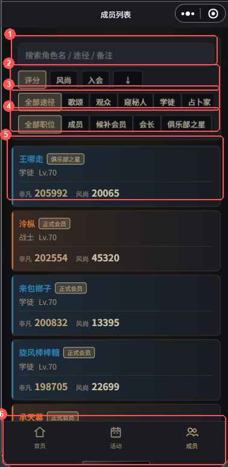
三 邀请码 / 入会
这个页面用来干什么：把「名单上的角色」和「成员的微信」绑在一起。邀请码不会新建角色——名单外的角色名直接被拒，避免路人混进俱乐部。
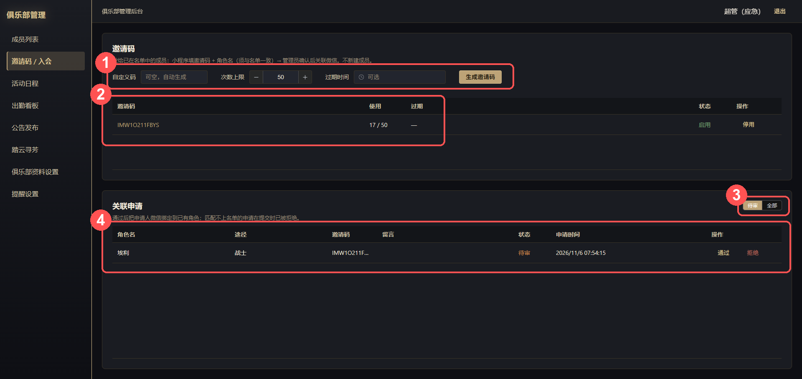
3.1 管理端：发码与审核
3.2 小程序端：成员怎么自己关联
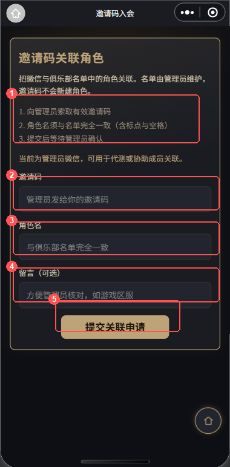
四 活动日程
这个页面用来干什么：发布和管理俱乐部活动——日常、周本、PVP 都行；支持一次性活动，也支持「每周几」这种循环活动。成员在小程序报名（RSVP），到点前还能收微信提醒。
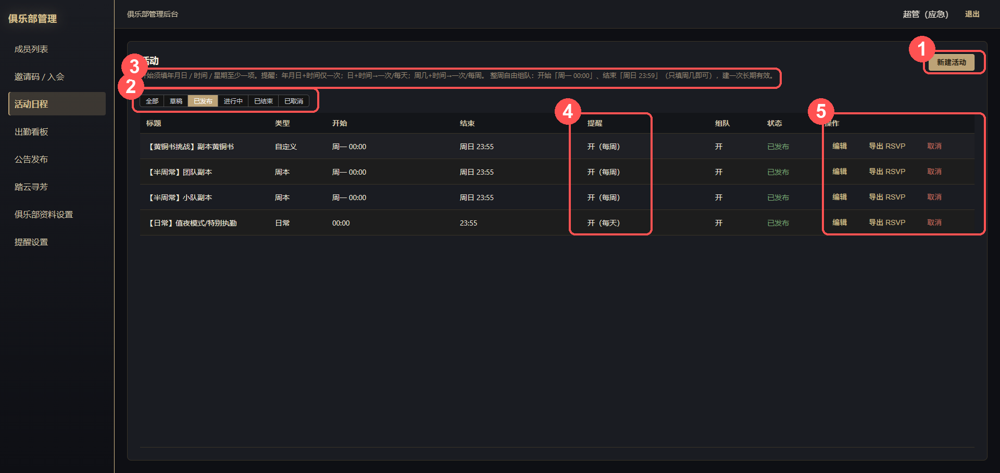
4.1 新建一场活动
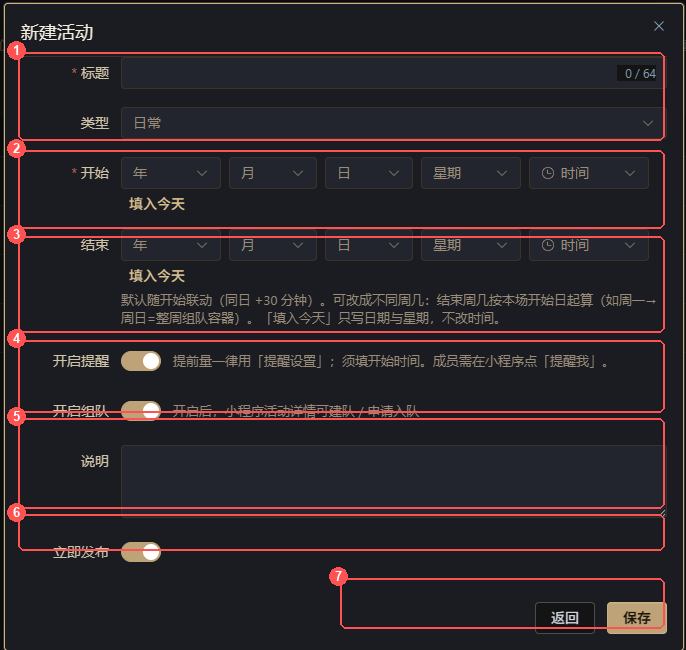
| 开始分量怎么填 | 活动的周期 | 举例 |
|---|---|---|
| 年月日 ＋ 时间 | 一次性，就这一场 | 11月20日 20:00 → 周六团 |
| 周几 ＋ 时间 | 每周循环 | 周三 20:30 → 每周三团 |
| 日 ＋ 时间（无月） | 每天循环 | 每日 21:00 值夜 |
| 仅周几（无时间） | 每周一次，整天容器 | 配合结束「周日」做整周组队容器 |
4.2 活动的生命周期
状态流转：草稿→已发布→进行中→已结束，发布后也可已取消。
4.3 导出 RSVP
4.4 小程序端：成员怎么报名
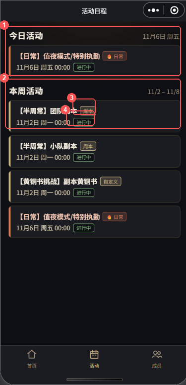
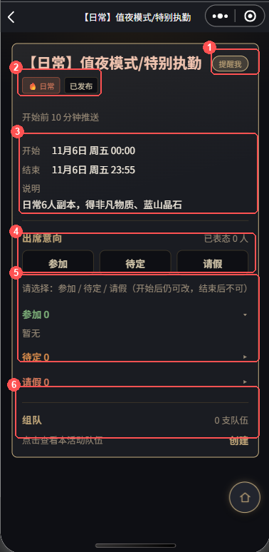
五 组队
这个功能用来干什么：活动下开「车队」招人——谁当队长、差几个人、几点开打，一目了然。管理端不直接操作队伍（队伍总览已暂缓），组队全流程发生在小程序。
5.1 规则速览
| 规则 | 说明 |
|---|---|
| 挂靠活动 | 队伍必须建在某个「开启组队」的活动下 |
| 人数 | 上限 ≥2，创建默认 6 |
| 门槛 | 队长可设「要求评分」，评分不足者无法申请 |
| 审批 | 申请要队长审批；满员自动停止招新，有人退出自动重新开放 |
| 到点 | 到达队伍「开打时间」自动变为「已开始」 |
| 唯一性 | 同一活动一人只能进一支队伍 |
5.2 小程序端：建队与入队
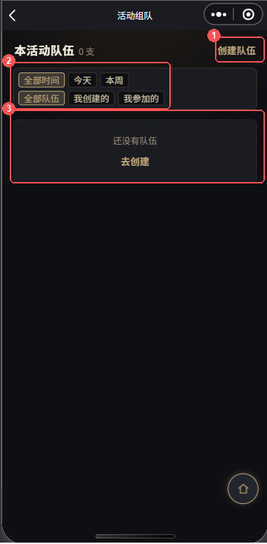
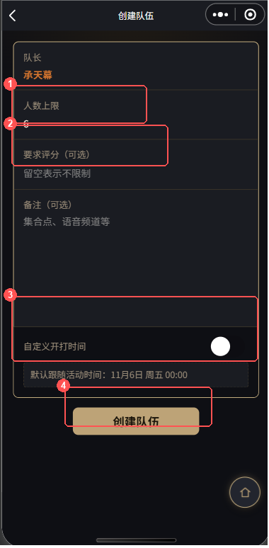
六 出勤看板
这个页面用来干什么：运营视角回答三个问题——今天有什么活动、谁来没来、最近谁活跃谁消失。RSVP 是意向，这里是「实到」的账本。
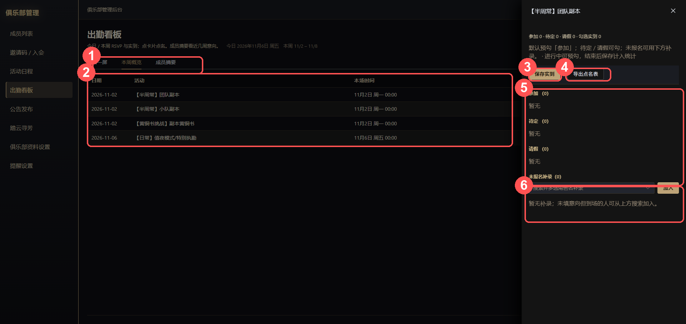
七 公告发布
这个页面用来干什么：发俱乐部通知。置顶的公告会转着圈顶在最前面——开服公告、招募管理员这类重要事，记得置顶。
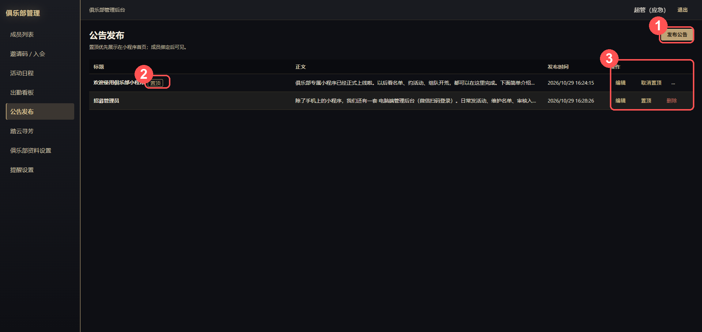
八 踏云寻芳
这个功能用来干什么：成员的晒图墙——游戏风景、角色自拍配上题目发出来，互相点赞。管理端管总量和违规内容。
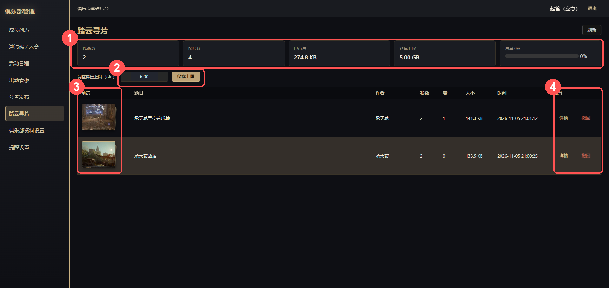
8.1 管理端：看总量、管内容
8.2 小程序端：发图与互动
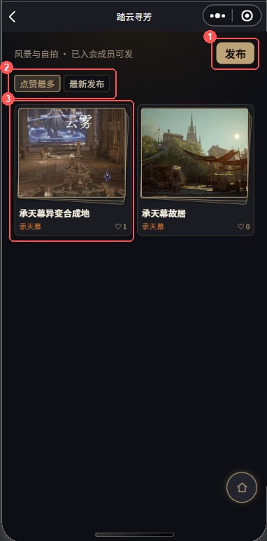
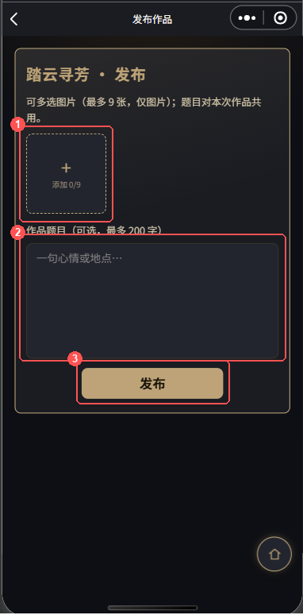
九 俱乐部资料设置
这个页面用来干什么：小程序首页「门厅」的门面——名称、图标、一句话简介都在这改。
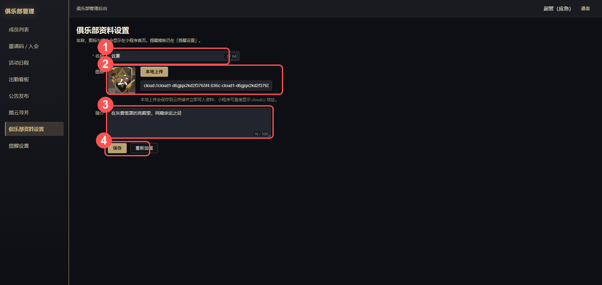
十 提醒设置
这个页面用来干什么：全俱乐部微信提醒的总开关——提前多久提醒、用什么模板、发哪个版本的小程序。
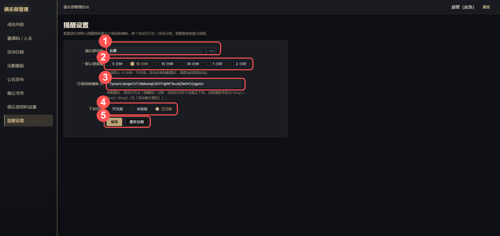
| 配置项 | 怎么填 |
|---|---|
| 默认提前量 | 可多选：5 / 10 / 15 / 30 分钟、1 / 2 小时。产品默认 10 分钟。单个活动不单独设提前量，一律用这里。 |
| 订阅消息模板 ID | 微信公众平台 → 订阅消息 → 「活动集合通知」模板的 ID。当前模板字段 thing1 / time3 / thing5。不填的话成员点「提醒我」只记账，不会真的下发。 |
| 下发环境 | 选「正式版」（正式上线后的正确值；开发 / 体验期才用前两项）。 |
十一 小程序首页与「我的」
这两个页面用来干什么：首页是成员每天打开的「会务大厅」；「我的」是个人事务中心。管理员日常触达成员，主要靠首页这两块。
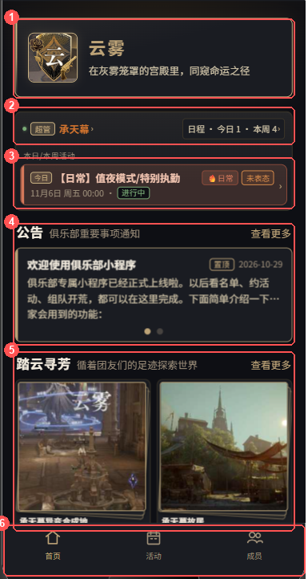
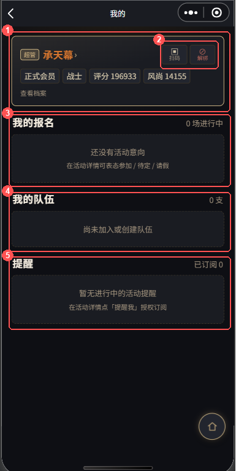
十二 常见问题 FAQ
| 问题 | 答案 |
|---|---|
| 登录页二维码出不来？ | 2026-11-04 起未认证主体微信不再下发小程序码。改用票号登录（第一章方式一）或应急账号 admin/admin。 |
| OCR 识别出的角色名缺字？ | 头像遮挡所致，属正常现象。在预览表里直接改正再导入；或重截更清晰的图。 |
| 成员说看不到成员列表 / 活动？ | 他的微信还没关联角色。走第三章邀请码流程；关联通过后立即可见。 |
| 成员没收到活动提醒？ | 依次查：活动是否开了「开启提醒」→ 成员是否点过「提醒我」→ 提醒设置里模板 ID 是否已填。周期活动每场都要重新授权「续订提醒」（微信限制）。 |
| 手滑移出了人？ | 不用慌：手录或 OCR 导入同名角色即自动恢复在职并保留数据。 |
| 周期活动的报名怎么「没了」？ | 每一场结束后自动清空 RSVP 和队伍、滚到下一场，这是设计行为。需要留档就在换场前「导出 RSVP」（系统也会留存场次日快照）。 |
| 整周容器怎么不显示在今日活动？ | 跨日周常容器只在「本周活动」出现；其下队伍的开打日期是今天时才会抬入今日列表。开打时间填在队伍上。 |
| 踏云寻芳图片误删能找回吗？ | 不能。撤回 / 删除是尽力删除云存储，无回收站。删前跟作者确认。 |
| 邀请码能发多少人？ | 生成时自定「次数上限」，用完自动失效；也可手动停用。同一角色名只能绑一个微信。 |
| 游戏 UI 改版后 OCR 失效？ | OCR 针对当前游戏成员列表版面做的解析，官方改版可能要调解析逻辑——先用手录顶着，反馈给开发者。 |
附录 A 状态机速查
入会申请
待审核→ 通过（绑定微信，成为成员）／ 拒绝
活动
草稿→已发布→进行中→已结束；已发布后可 →已取消。一次性到点自动结束并关闭招募中队伍；周期活动保持已发布、按场滚动。
队伍
招募中⇄已满员⇄已关招募；到开打时间 →已开始；队长可 →已撤销（不再显示）。
入队申请
待审批→ 通过 ／ 拒绝；成员可撤回；队长可踢出。
附录 B 途径色对照
| 途径 | 色标 | 途径 | 色标 |
|---|---|---|---|
| 观众 | #94c7b1 | 学徒 | #2c81b0 |
| 战士 | #d3742e | 占卜 | #54599f |
| 歌颂 | #debd39 | 窥秘 | #975dc1 |
名单、报名、队伍、晒图里的角色名颜色即按此着色；未填途径用默认色。
附录 C 名词表
| 名词 | 含义 |
|---|---|
| 非凡评分 / 风尚度 | 游戏内官方战力与时装评分，成员档案核心数值 |
| RSVP | 出席意向：参加 / 待定 / 请假三态，成员自主表态 |
| 实到 | 管理员点名的「真实到场」，与 RSVP 分开记账 |
| 本场 / 场次日 | 周期活动的一次具体发生，如「周三团 · 11月5日」 |
| 整周组队容器 | 周一 00:00～周日 23:59 的周常活动，本身不打，供全周建队 |
| 票号（登录编号） | 管理端登录页生成的一次性短码，在小程序「我的 → 扫码」粘贴确认登录 |
| 会务条 | 小程序首页顶部的身份 + 日程摘要条 |
| 踏云寻芳 | 成员晒图功能名，取自游戏玩法意象 |
诡秘之主 · 俱乐部管理 使用手册 v1.0 ｜ 配图由项目截图加注生成，原图保留于「项目页面截图 /」 ｜ 文档随版本更新，如与实际界面不符以线上版本为准